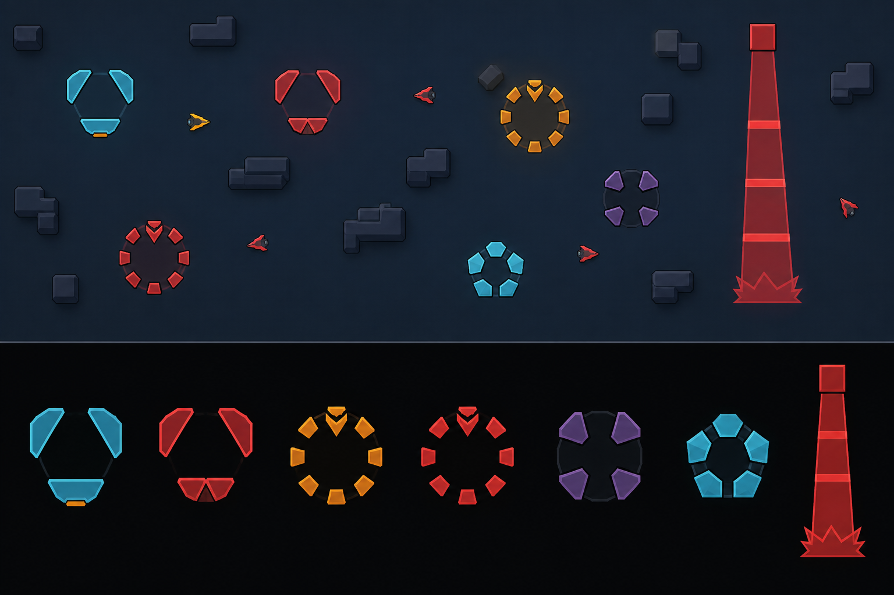
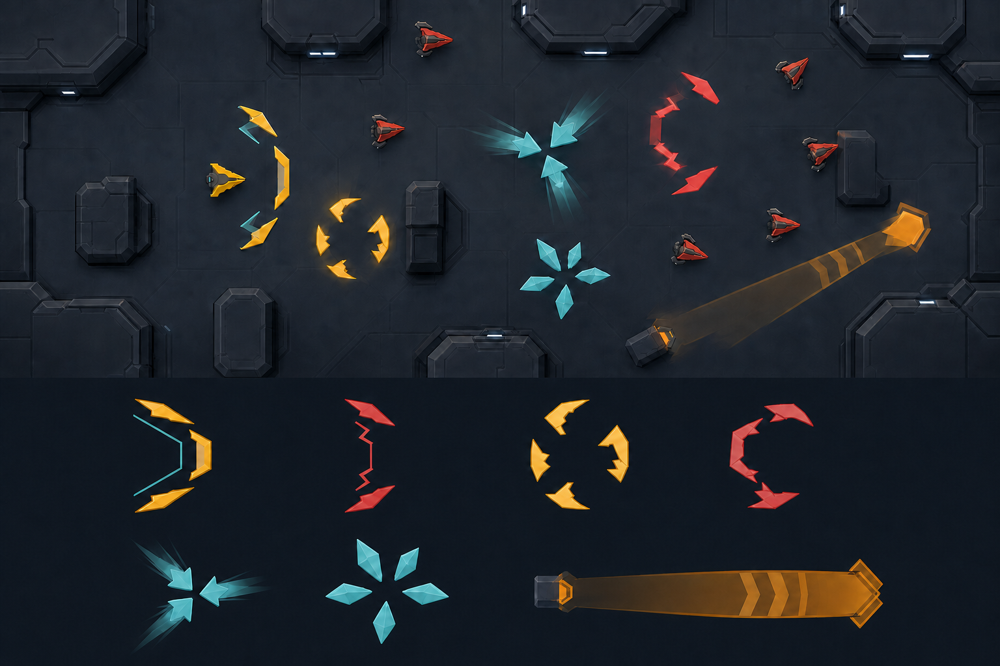
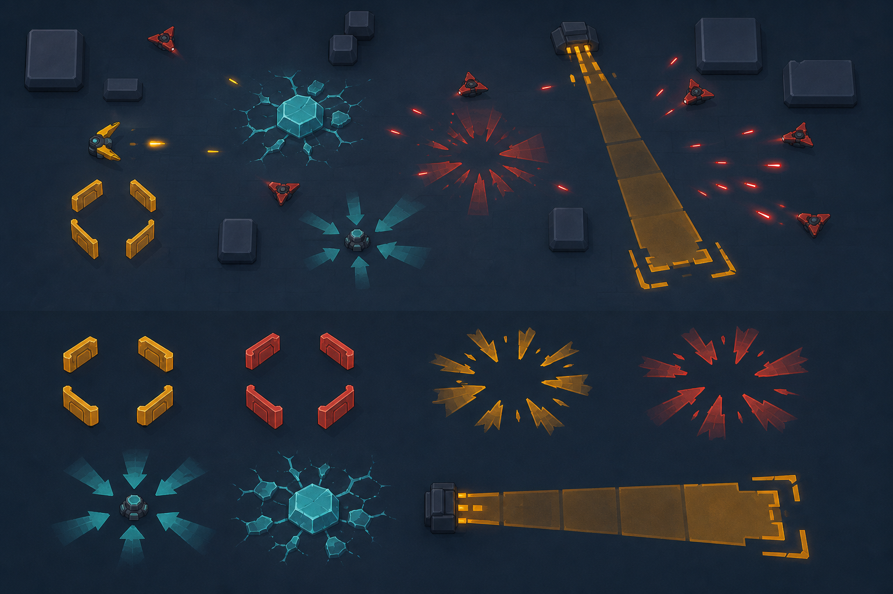

1 · Problem
Different jobs look the same
- The barrier and damage area reuse a ring.
- Player and hostile ownership is weak.
- Some warnings do not clearly show the live area.
Effects
The player must read the result, the owner, and the true danger area at a glance.
1 · Problem
2 · Fix
3 · Decided
4 · Your choice
Choose a barrier, damage area, pull, freeze, and meteor path from A, B, or C. Mixing is allowed.
Current game
The current barrier is a plain ring. A damage area also uses a ring, so shape alone does not tell the result.

Protection should look like open shield plates. Repeating damage should look active and outward. Pull, freeze, and meteor warnings need their own silhouettes.
Review-only art
Top: effects in combat. Bottom: player barrier, hostile barrier, player damage, hostile damage, pull, freeze, and meteor path.

Calm blocks. Sparse plates and the least visual noise.
Open full image →
Angled cuts. Strong direction and clearer motion.
Open full image →
Heavy contrast. The boldest and largest silhouettes.
Open full image →No extra choice
It decides what the player can do, how strong it is, and how often it happens.
It shows protection, damage, pull, freeze, or warning. A card picture does not replace the live effect.
{kind=link}
{kind=link}
{kind=link}